🚀 Moving Docker Images to OpenShift on CRC
docker build -t rifaterdemsahin/prometheusremotewriteopenshiftclusters .
In this guide, I’ll walk you through moving a Docker image to your OpenShift instance running on CRC (CodeReady Containers) using the OpenShift CLI. This quick process ensures that your image is deployed efficiently and can be monitored through tools like Prometheus.
💡 What You'll Achieve:
We'll be creating a new application in OpenShift from a Docker image. The command we’ll use is oc new-app --docker-image=rifaterdemsahin/prometheusremotewriteopenshiftclusters, which pulls the image from Docker Hub and sets up the application on your OpenShift cluster.
Use the docker desktop registry is the environment to use
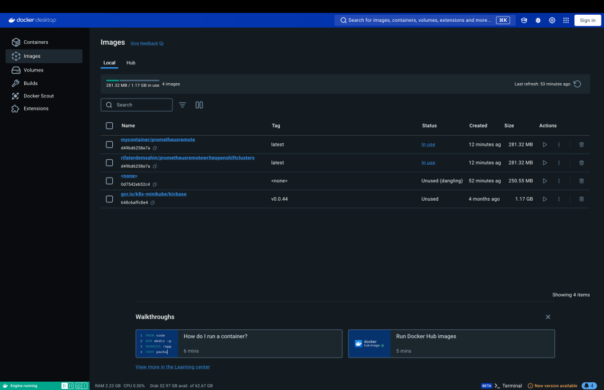
🚀 Step-by-Step Process:
- Make sure CRC is running:
Before we begin, ensure that your OpenShift CRC is up and running. If it's not, you can start it by running:
crc start
- Log into OpenShift CLI (oc):
Open your terminal and log into your OpenShift cluster using:
oc login -u developer -p developer https://api.crc.testing:6443
Make sure you're authenticated and connected to your cluster.
- Create a new app using the Docker image:
Now, you can deploy your Docker image by running the following command:
oc new-app --docker-image=rifaterdemsahin/prometheusremotewriteopenshiftclusters
OpenShift will automatically pull the Docker image from Docker Hub and set up the application.
`rifaterdemsahin@Rifats-MacBook-Pro code % oc new-app --docker-image=rifaterdemsahin/prometheusremotewriteopenshiftclusters
Flag --docker-image has been deprecated, Deprecated flag use --image
error: can't lookup images: imagestreamimports.image.openshift.io is forbidden: User "developer" cannot create resource "imagestreamimports" in API group "image.openshift.io" in the namespace "default"
error: unable to locate any local docker images with name "rifaterdemsahin/prometheusremotewriteopenshiftclusters"
The 'oc new-app' command will match arguments to the following types:
- Images tagged into image streams in the current project or the 'openshift' project
- if you don't specify a tag, we'll add ':latest'
- Images in the container storage, on remote registries, or on the local container engine
- Templates in the current project or the 'openshift' project
- Git repository URLs or local paths that point to Git repositories
--allow-missing-images can be used to point to an image that does not exist yet.
See 'oc new-app -h' for examples.
rifaterdemsahin@Rifats-MacBook-Pro code %
`
- Check the status of the deployment:
To ensure everything is running smoothly, check the status of the newly deployed application using:
oc status
You should see output indicating that your application is up and running.
- Access your application:
Once deployed, OpenShift will expose the app with a route. You can find the URL using:
oc get routes
This command will return the external URL where you can access your application.
- Monitor with Prometheus:
Now that your app is deployed, you can start integrating Prometheus to monitor your infrastructure metrics. The deployed image has PrometheusRemoteWrite functionality built-in, making it easier to push the cluster's state to your Prometheus setup.
🔧 Troubleshooting Tips:
-
If you encounter any issues with pulling the Docker image, make sure that your CRC has internet access, and the Docker Hub image is public.
-
You can always use
oc logson your pods to diagnose any application issues.
🔗 Connect with me:
-
💼 LinkedIn: Rifat Erdem Sahin
-
🐦 Twitter: Rifat on Twitter
-
🎥 YouTube: Rifat on YouTube
-
💻 GitHub: Rifat on GitHub
Stay tuned for more OpenShift and DevOps tips! 🚀
It seems like you're encountering a few issues while trying to deploy the Docker image to OpenShift using the oc new-app command. Let's address each problem step-by-step.
1. Flag Deprecation Warning:
The --docker-image flag has been deprecated. You should use --image instead.
Updated command:
oc new-app --image=rifaterdemsahin/prometheusremotewriteopenshiftclusters
Admin Login
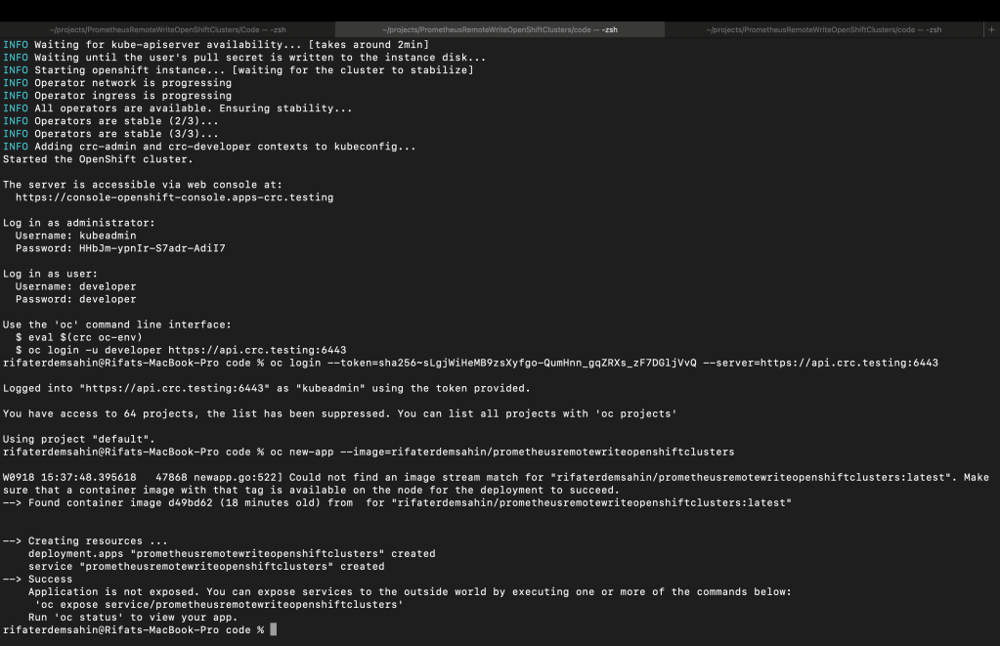
2. Permission Issue:
The error message imagestreamimports.image.openshift.io is forbidden indicates that the user developer doesn't have the required permissions to create imagestreamimports in the default namespace. This often happens because CRC or OpenShift instances have limited permissions for the default developer user.
You can try switching to a project or namespace where you have more permissions or try giving yourself elevated access by running:
oc adm policy add-role-to-user admin developer -n
Replace <your-namespace> with the namespace you're working in (you can check your current namespace by running oc project).
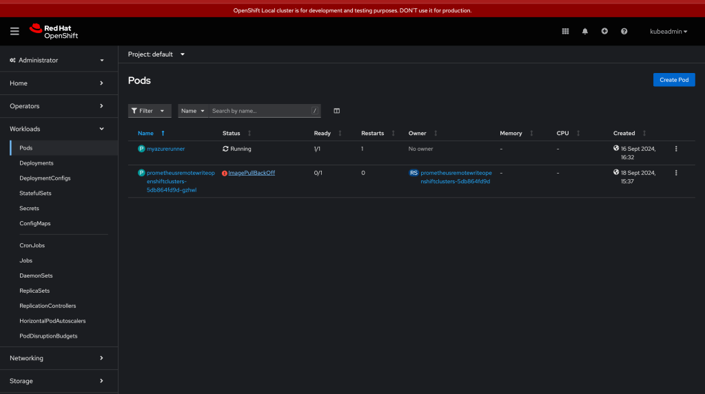
3. Image Not Found Locally:
The error unable to locate any local docker images with name "rifaterdemsahin/prometheusremotewriteopenshiftclusters" suggests that the Docker image you're trying to deploy doesn't exist locally. If you're using a remote Docker registry (like Docker Hub), make sure you're connected and that the image is public and accessible.
To ensure you're pulling from the Docker Hub registry, use:
oc new-app --image=docker.io/rifaterdemsahin/prometheusremotewriteopenshiftclusters
4. Allow Missing Images:
If the image is still being built or isn't yet available in the registry, you can use the --allow-missing-images flag to allow OpenShift to proceed with the setup, even if the image is missing:
oc new-app --image=docker.io/rifaterdemsahin/prometheusremotewriteopenshiftclusters --allow-missing-images
Final Command:
If you've confirmed that the image is public and the namespace permissions are resolved, try this final command:
oc new-app --image=docker.io/rifaterdemsahin/prometheusremotewriteopenshiftclusters
Let me know if you encounter any more issues!

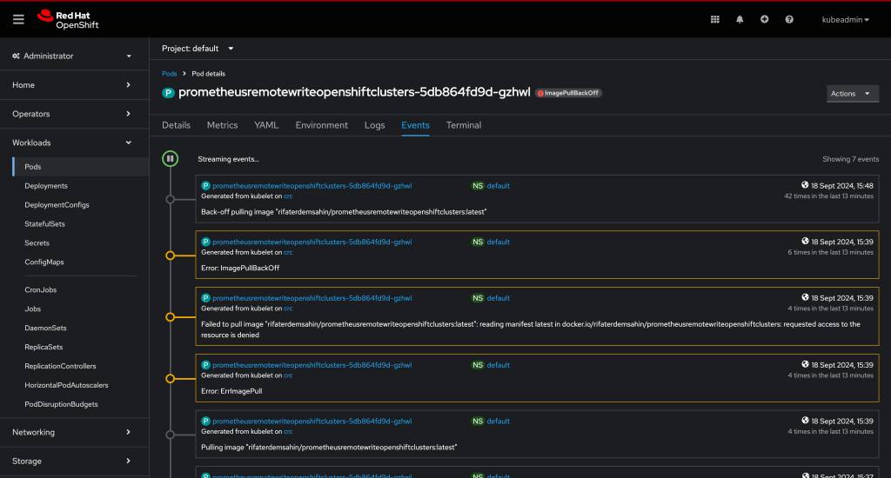
It looks like you're encountering an image pull error: "requested access to the resource is denied." This indicates that OpenShift is having trouble pulling the Docker image from Docker Hub, likely due to one of the following reasons:
Possible Causes and Solutions:
1. The Image is Private:
If the Docker image you're trying to pull is set to private on Docker Hub, OpenShift won't be able to access it without proper authentication.
Solution:
You can either:
-
Make the image public on Docker Hub.
-
Authenticate to Docker Hub in OpenShift using a pull secret. Here's how to create a secret in OpenShift to allow pulling private images:
oc create secret docker-registry my-dockerhub-secret \
--docker-server=https://index.docker.io/v1/ \
--docker-username=
--docker-password=
--docker-email=
Then link the secret to your service account:
oc secrets link default my-dockerhub-secret --for=pull
This allows OpenShift to use your Docker Hub credentials when pulling the image.
2. Tag Issues:
The error mentions that it's trying to pull the latest tag. If you haven't pushed a latest tag for the image, Docker Hub won't be able to find it.
Solution:
Check if you've tagged the image as latest or specify a specific tag when deploying:
oc new-app --image=docker.io/rifaterdemsahin/prometheusremotewriteopenshiftclusters:
Replace <specific-tag> with the appropriate tag you’ve used, such as v1, 1.0, etc.
3. Docker Hub Access Issues:
If the issue is due to general access problems with Docker Hub, you could try pulling the image manually on your local machine to verify the access:
docker pull rifaterdemsahin/prometheusremotewriteopenshiftclusters
If this fails, it confirms there’s an issue with the image access.
4. Docker Hub Rate Limiting:
Docker Hub applies rate limits on anonymous users. If you've exceeded the pull rate limit, OpenShift will also encounter issues.
Solution:
-
Authenticate using Docker Hub credentials as shown above to avoid rate limits.
-
Or try again after the rate limit period resets.
Once the authentication and access issues are resolved, your OpenShift deployment should be able to pull the image successfully.
Let me know how it goes!
If you already have the Docker image in your local Docker Desktop engine, you can follow these steps to push it to your OpenShift cluster running on CRC (CodeReady Containers). OpenShift by default does not directly pull from the local Docker Desktop engine, but you can load the image into the OpenShift internal registry and then deploy it.
Steps to Use a Locally Built Docker Image on OpenShift CRC
1. Log in to OpenShift from CLI:
Make sure you're logged into OpenShift and pointing to the correct project:
oc login -u developer -p developer https://api.crc.testing:6443
oc project default
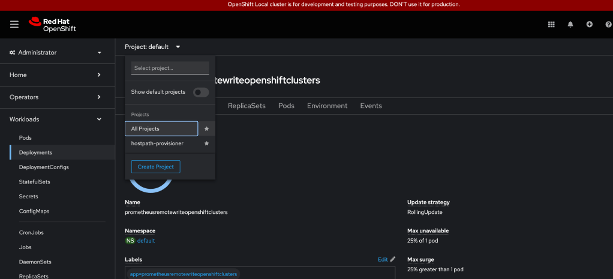
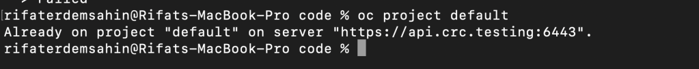
2. Tag the Local Docker Image for OpenShift:
Tag your local Docker image to point to the internal OpenShift registry. CRC exposes a local registry where images can be pushed.
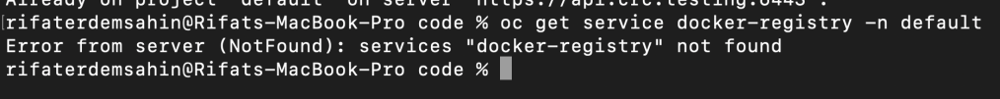
First, get the OpenShift registry URL by running:
oc get service docker-registry -n default
You should get a response similar to:
docker-registry.default.svc:5000
Now, tag your local image so it can be pushed to the OpenShift internal registry:
docker tag rifaterdemsahin/prometheusremotewriteopenshiftclusters:latest \
docker-registry.default.svc:5000/
3. Log in to the OpenShift Internal Docker Registry:
Log in to the OpenShift internal Docker registry:
docker login -u developer -p $(oc whoami -t) docker-registry.default.svc:5000
4. Push the Image to the OpenShift Internal Registry:
Now, push the image to OpenShift's internal registry:
docker push docker-registry.default.svc:5000/
5. Deploy the Image in OpenShift:
Once the image is pushed to the OpenShift internal registry, you can deploy it by referencing the internal image stream.
Create a new app using the image you just pushed:
oc new-app default/prometheusremotewriteopenshiftclusters:latest
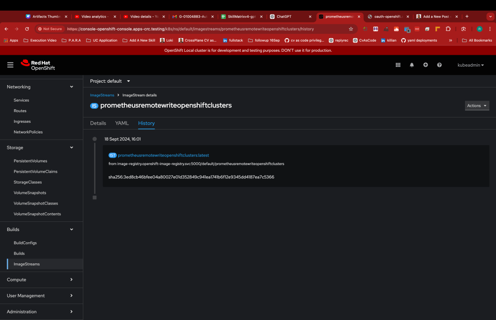
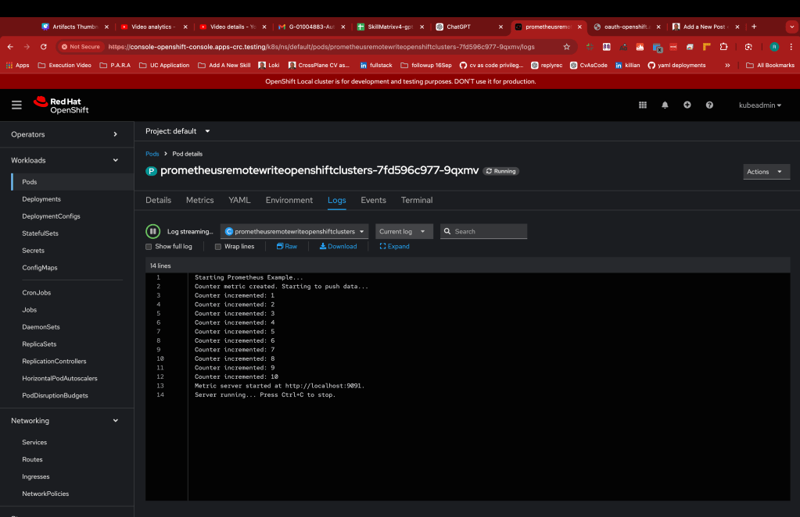
6. Expose the Service (Optional):
To expose your app and create a route so it can be accessed externally, run:
oc expose svc/prometheusremotewriteopenshiftclusters
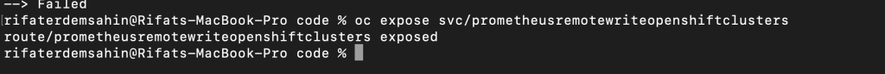
This will create a route, and you can check the external URL with:
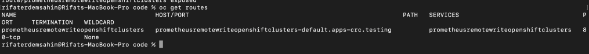
oc get routes
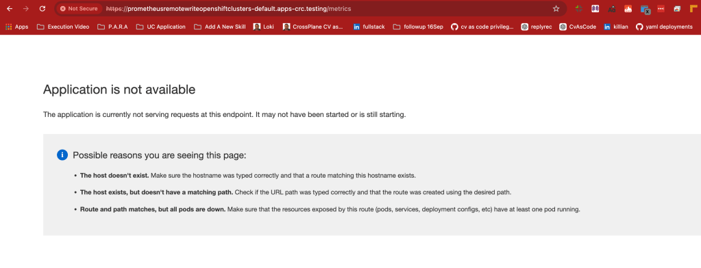
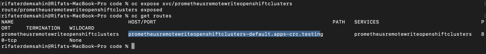
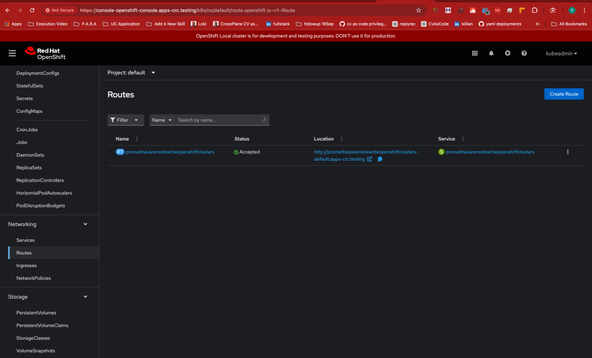
This should allow you to deploy your locally built Docker image to your OpenShift CRC instance. Let me know if you encounter any issues!
It looks like OpenShift CRC (CodeReady Containers) no longer uses the docker-registry service that was commonly found in older versions of OpenShift. OpenShift 4.x and CRC typically use an integrated image registry that doesn’t have the same service exposed as earlier versions.
Here’s how to proceed with deploying a local image in the new setup of OpenShift CRC:
Steps for Pushing a Local Image to OpenShift CRC
1. Get the OpenShift Integrated Registry URL
To get the internal image registry URL for OpenShift, use the following command:
oc get route default-route -n openshift-image-registry --template='{{ .spec.host }}'
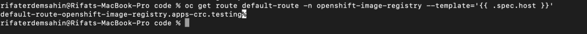
This should return something like:
default-route-openshift-image-registry.apps-crc.testing
2. Tag the Local Docker Image for OpenShift
Once you have the registry URL, tag your local image to be compatible with the OpenShift internal registry.
docker tag rifaterdemsahin/prometheusremotewriteopenshiftclusters:latest
default-route-openshift-image-registry.apps-crc.testing/default/prometheusremotewriteopenshiftclusters:latest
Make sure to replace <your-project-name> with your actual project name in OpenShift.
rifaterdemsahin@Rifats-MacBook-Pro code % docker tag rifaterdemsahin/prometheusremotewriteopenshiftclusters:latest default-route-openshift-image-registry.apps-crc.testing/default/prometheusremotewriteopenshiftclusters:latest
rifaterdemsahin@Rifats-MacBook-Pro code %
3. Log in to the OpenShift Image Registry
Next, log in to the OpenShift image registry using the credentials from OpenShift:
docker login -u developer -p $(oc whoami -t) default-route-openshift-image-registry.apps-crc.testing
4. Push the Image to OpenShift's Internal Registry
Once you are logged in, push the image to the internal OpenShift registry:
docker push default-route-openshift-image-registry.apps-crc.testing/default/prometheusremotewriteopenshiftclusters:latest
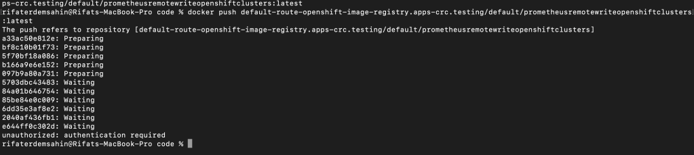
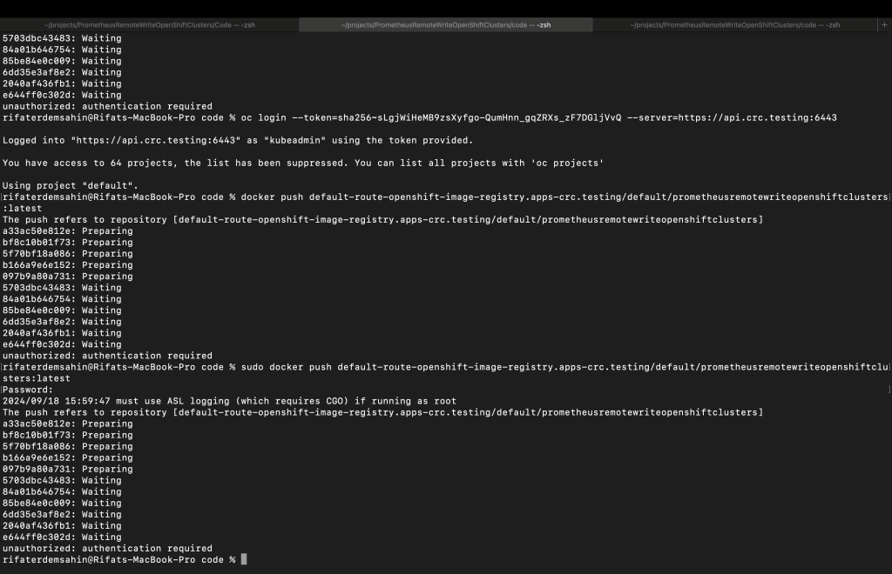
5. Deploy the Image in OpenShift
Now, you can create a new app in OpenShift using the image that you pushed to the internal registry:
oc new-app default/prometheusremotewriteopenshiftclusters:latest
6. Expose the Application (Optional)
If you want to expose the application with an external route so that it can be accessed from outside the OpenShift cluster, you can create a route:
oc expose svc/prometheusremotewriteopenshiftclusters
Check the route with:
oc get routes
These steps should allow you to successfully push and deploy a locally built image to OpenShift CRC. Let me know if you need any further clarification!
The unauthorized: authentication required error suggests that Docker is not properly authenticated to push the image to OpenShift's internal registry. Let’s make sure that you are correctly logged in to the OpenShift internal registry.
Steps to Fix the Issue:
1. Ensure You're Logged in to OpenShift Registry
You need to log in to OpenShift's internal image registry using the docker login command, which uses the OpenShift token for authentication. Run the following command:
docker login -u developer -p $(oc whoami -t) default-route-openshift-image-registry.apps-crc.testing
This command retrieves your OpenShift token ($(oc whoami -t)) and uses it to log in to the internal registry. If you’re using a different user, replace developer with your username.
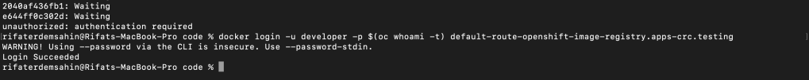
2. Push the Image Again
Now that you're authenticated, retry pushing the image:
docker push default-route-openshift-image-registry.apps-crc.testing/default/prometheusremotewriteopenshiftclusters:latest
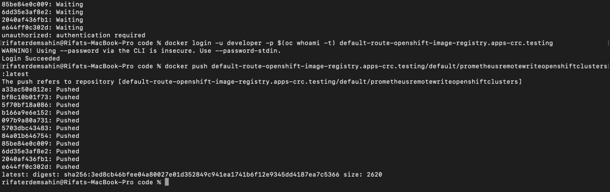
- Verify Push
If the push is successful, you can verify that the image has been uploaded to the OpenShift registry by checking the image stream:
oc get is prometheusremotewriteopenshiftclusters
This should show the image as available in your OpenShift project.
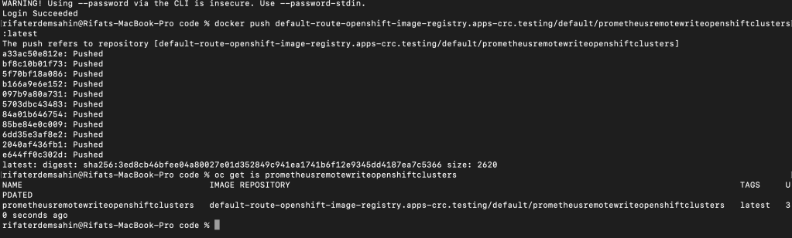
Let me know if you encounter further issues!
Delete pod in openshift still there is an error
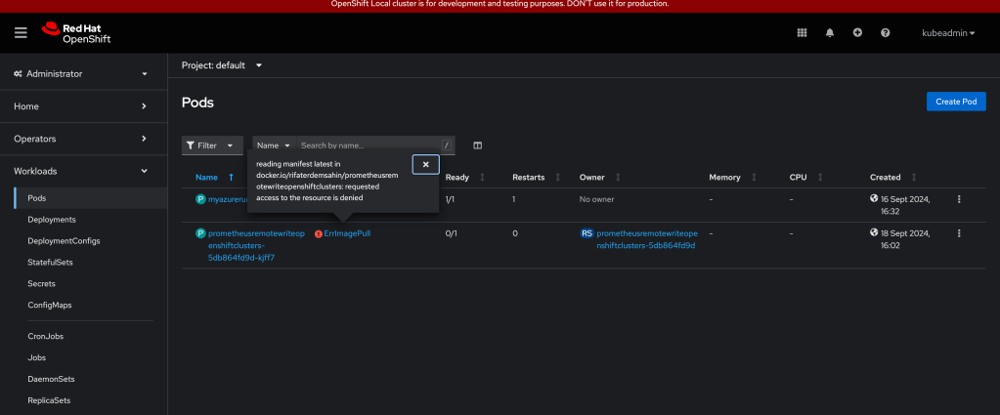
🔗 Connect with me:
-
💼 LinkedIn: https://www.linkedin.com/in/rifaterdemsahin/
-
🐦 Twitter: https://x.com/rifaterdemsahin
-
🎥 YouTube: https://www.youtube.com/@RifatErdemSahin
-
💻 GitHub: https://github.com/rifaterdemsahin
Imported from rifaterdemsahin.com · 2025